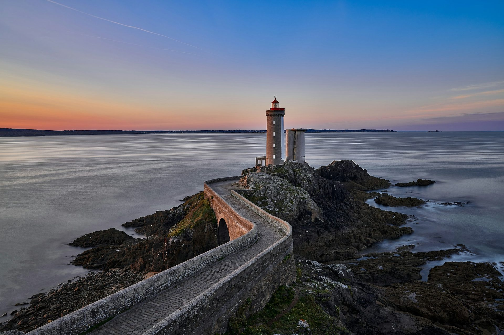
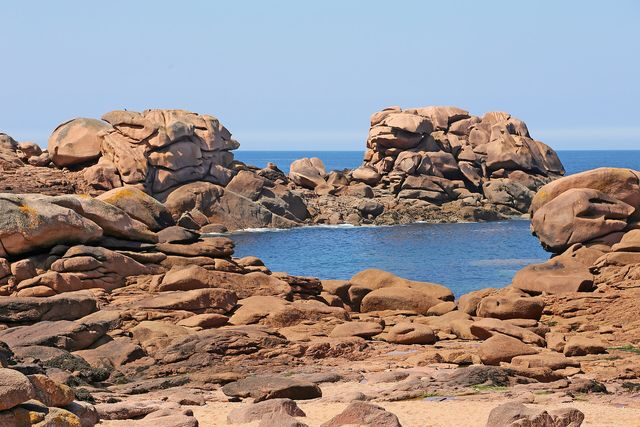
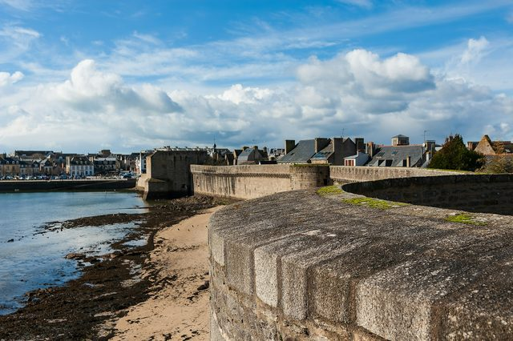
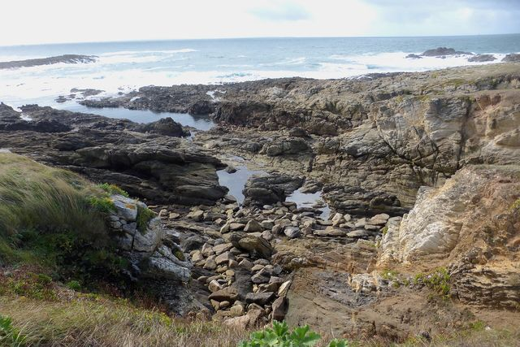
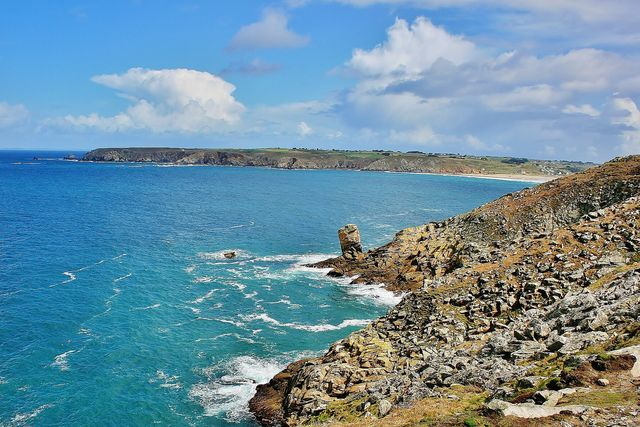

Brittany, between ramparts and pink granite
Corsair towns, medieval cities, thousands of standing stones and wild coastlines: Brittany is worth visiting all year round, even in the sea spray.
Photo: Roberto Gualini / Unsplash
Brittany has some of the most beautiful coastal scenery in France: the ramparts of Saint-Malo, the pink rocks of Ploumanac’h, the beaches of the Morbihan and the walled towns of Finistère. Inland, Dinan, Quimper and Rennes have kept their half-timbered houses and medieval lanes.
The TGV links Paris to Rennes in about 1 hr 30, then on to Saint-Malo or Quimper. For the coast and small harbours, a car is the most practical. Each guide tells you what to see, how to get there and what to book.
Saint-Malo and the north coast
-

The walled town, the ramparts walk and the Grand Bé at low tide, on the Emerald Coast.
-

Half-timbered houses, ramparts and Rue du Jerzual running down to the port on the Rance.
-

The customs officers’ path among the pink granite rocks, out to the Ploumanac’h lighthouse.
-

Over 2,000 km of coastal path round Brittany, from Mont-Saint-Michel to Saint-Nazaire.


Finistère and Morbihan
-

Saint-Corentin cathedral, half-timbered houses and the flowered footbridges over the Odet.
-

The Ville Close on its fortified islet, in the middle of one of France’s great fishing ports.
-

Nearly three thousand standing stones lined up over kilometres, close to the Morbihan beaches.
-

A wild Atlantic coast, sheltered beaches and the boats to Belle-Île.
-

Cliffs facing the Île de Sein at the tip of Finistère: a Grand Site de France.


Brittany events in 2026-2027
Summer is the season for Brittany’s big festivals: the Festival de Cornouaille fills Quimper every late July, and the Lorient Interceltic Festival is announced for 30 July to 8 August 2027. Out of season, the coast is quieter and often more dramatic, under the winter storms.
Good to know before you go: in Ploumanac’h, the large Ranolien car park is free, and the customs officers’ path stays open in winter. In Quimper, the Musée des Beaux-Arts is closed for works until it reopens, planned for 2027.